破損
📌 本章要解決的核心問題
為什麼 Titanic 的鋼板在冰水中像玻璃一樣碎裂？為什麼飛機機身會在看似安全的應力水平下突然斷裂？為什麼渦輪葉片在高溫下即使承受遠低於降伏應力的負載也會慢慢伸長直到斷裂？本章統整三種工程中最常見也最危險的失效模式：斷裂（fracture——瞬間、無預警）、疲勞（fatigue——循環載荷、漸進式）、潛變（creep——高溫、時間依賴）。理解這些模式不僅是材料科學的核心，更是工程安全的最後防線。
🔑 10 條關鍵概念
- 延性 vs 脆性斷裂：延性=大量塑性變形+微孔聚合+慢速傳播（有預警）；脆性=劈裂或沿晶+幾乎無變形+接近音速傳播（最危險）
- 應力集中：$\\sigma_m = 2\\sigma_0\\sqrt{a/\\rho_t}$——尖銳裂紋的尖端曲率半徑 ρ_t 極小，放大應力數十至數百倍
- 破裂韌性 $K_{Ic}$：材料抵抗脆性斷裂的終極度量。$K_I = Y\\sigma\\sqrt{\\pi a} \\ge K_{Ic}$ 時發生快速斷裂
- Griffith 理論：脆性材料的斷裂強度 $\\sigma_f = \\sqrt{2E\\gamma_s/(\\pi a)}$——裂紋愈長→強度愈低
- 延脆轉變溫度 DBTT：BCC 金屬低溫變脆（Liberty 船、Titanic），FCC 金屬無 DBTT（極低溫仍延性）
- 疲勞三階段：裂紋起始（表面滑移帶）→裂紋傳播（海灘紋 striations）→最終斷裂。佔金屬失效 ~90%
- S–N 曲線與疲勞極限：鋼和鈦有疲勞極限（應力低於此永不破壞）；鋁和銅沒有——無論應力多低都有有限壽命
- 潛變三階段：初級（速率遞減）→次級（穩態——設計關鍵）→三級（加速→斷裂）
- Larson-Miller 參數：$P = T(C + \\log t_r)$——高溫短時測試外推低溫長時服役壽命
- 表面處理的關鍵角色：噴丸、滲碳、滲氮在表面引入壓縮殘留應力→大幅提高疲勞壽命
🧭 邏輯鏈
Griffith 裂紋理論（應力集中+斷裂力學）→ 破裂韌性 $K_{Ic}$ 的工程應用 → DBTT 的歷史教訓 → 疲勞機制（循環應力→漸進式破壞）→ 疲勞壽命設計（S–N 曲線）→ 潛變（高溫時間依賴變形）→ Larson-Miller 壽命外推
先備知識橋接
- Ch6：韌性（應力–應變曲線下面積）、%RA（斷面收縮率）——延性斷裂的巨觀指標
- Ch7：差排運動與塑性變形——疲勞裂紋起始於表面滑移帶；潛變涉及差排攀移
- Ch7：DBTT 的晶體學根源——BCC 金屬低溫時螺旋差排的熱激活不足
- 基本微積分：裂紋尖端應力場的 $1/\sqrt{r}$ 奇異性——理解 $K_I$ 的數學基礎
8.1 斷裂導論——延性斷裂與脆性斷裂
判斷不能只看斷口外觀：延性斷裂通常經歷微孔洞成核、長大與聚合；脆性斷裂則可能沿晶或穿晶快速擴展。實際零件常是混合模式，材料、溫度、厚度、應變速率、缺口與應力三軸度都會改變延脆傾向。
斷裂（fracture）是固體材料在應力作用下分離為兩塊或多塊的過程。它是所有失效模式中最危險的——不像疲勞和潛變有時間預警，斷裂可以是瞬時且災難性的。根據斷裂前塑性變形的程度，分為兩大類：
延性斷裂（ductile fracture）——斷裂前有大量的塑性變形，伴隨明顯的頸縮（necking），斷裂面呈纖維狀（fibrous）、暗灰色、有剪切唇（shear lip）。微觀機制：微孔洞（microvoids）在夾雜物或第二相顆粒處成核→ 成長（growth）→ 合併（coalescence）→ 形成杯錐狀（cup-and-cone）斷口。延性斷裂相對「安全」——大量變形提供視覺預警。
脆性斷裂（brittle fracture）——斷裂前極少或無塑性變形，裂紋傳播極快（可達聲速的 ~40%）。斷裂面呈晶亮顆粒狀（granular）或平坦的解理面（cleavage facet），通常垂直於最大拉伸應力方向。脆性斷裂沿特定晶體學平面（解理面 cleavage plane）發生——在 BCC 金屬中為 {100} 面，在 HCP 金屬中為 {0001} 面。FCC 金屬沒有解理斷裂（因為有 12 個滑移系統，總是先滑移而非解理）——這就是為什麼 FCC 材料（鋁、銅、沃斯田鐵不銹鋼）在低溫下仍保持韌性。
脆性斷裂傾向隨以下因素增加：(1) 低溫——降低差排移動性；(2) 高應變速率（衝擊載荷）——差排沒有時間移動；(3) 三軸應力狀態（缺口、厚截面、裂紋尖端）——抑制塑性變形。三個因素的共同作用是抑制差排運動——當差排無法移動時，材料唯一的應力釋放方式就是斷裂。
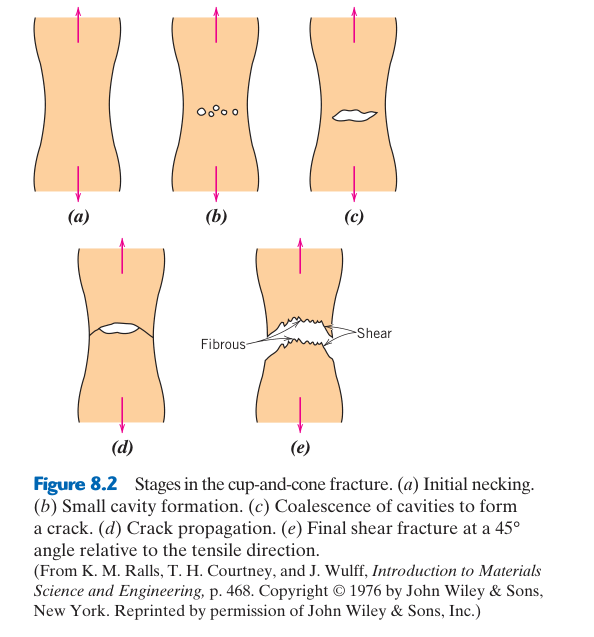
8.2 Griffith 理論——脆性斷裂的能量基礎
能量平衡：裂紋增長會釋放彈性應變能，同時需建立新表面；當能量釋放率 $G$ 達 $G_c$，裂紋可自行前進。理想式適合脆性固體；金屬裂尖有顯著塑性耗能，實際韌性遠高於單純表面能預測。
Griffith 在 1920 年解釋了為什麼玻璃的實際強度（~50–100 MPa）比理論強度（~10 GPa）低了 100 倍——答案是預存在的微裂紋。他從能量平衡推導出脆性材料的斷裂條件：裂紋擴展釋放的彈性應變能 ≥ 產生新裂紋表面所需的表面能。對於無限大平板中的穿透裂紋：$\sigma_f = \sqrt{2E\gamma_s/(\pi a)}$。關鍵：$\sigma_f \propto 1/\sqrt{a}$——裂紋愈長，斷裂強度愈低。對於玻璃中的 $a = 1$ μm 裂紋：$\sigma_f \approx 200$ MPa——與實際玻璃強度一致。
Griffith 理論直接適用於完全脆性材料（玻璃、陶瓷）。對於金屬，裂紋尖端會發生局部塑性變形——這消耗大量能量。Irwin 和 Orowan 將 Griffith 公式修改為：$\sigma_f = \sqrt{2E(\gamma_s + \gamma_p)/(\pi a)} \approx \sqrt{2E\gamma_p/(\pi a)}$（$\gamma_p$ 通常比 $\gamma_s$ 大 100–1000 倍）。這就是為什麼金屬的斷裂韌性遠高於陶瓷——塑性變形吸收了巨大的能量。
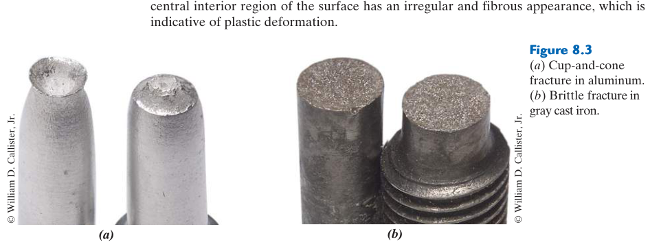
8.3 應力集中與裂紋尖端應力場
缺口與裂紋不同：有限圓角缺口可用幾何應力集中係數 $K_t$；理想尖裂紋在線彈性解中尖端應力發散，需以應力強度因子 $K$ 描述場的幅度。真實材料則由裂尖微小塑性區鈍化數學奇異性。
任何幾何不連續（孔洞、缺口、裂紋）都會產生應力集中。對於橢圓形孔洞：尖端最大應力 $\sigma_m = 2\sigma_0\sqrt{a/\rho_t}$，其中 $a$ 為橢圓長半軸（裂紋長度的一半），$\rho_t$ 為尖端曲率半徑。裂紋極其尖銳（$\rho_t$ 接近原子間距 ~0.2 nm）→ 應力放大倍數可達數十至數百倍。這就是為什麼即使遠低於 $\sigma_y$ 的名義應力，裂紋尖端的局部應力也可能超過原子鍵結強度。
金屬的「自救機制」——裂紋尖端塑性變形：當尖端應力超過 $\sigma_y$ 時，尖端發生塑性變形 → 裂紋鈍化（blunting）→ $\rho_t$ 增大 → 應力集中降低。這是金屬韌性的根源——塑性變形作為「保險絲」，在裂紋達到臨界狀態之前消耗能量。脆性材料（陶瓷、玻璃）無法塑性鈍化 → 裂紋尖端保持尖銳 → 在低名義應力下就達到臨界狀態。
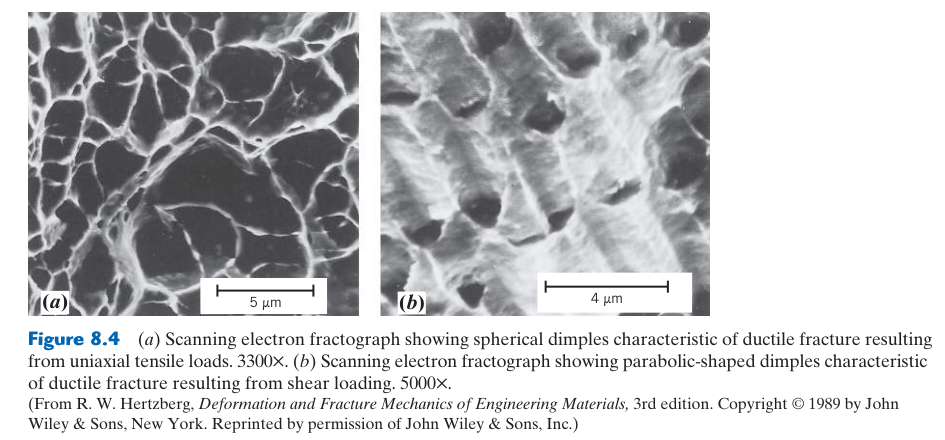
8.4 破裂韌性 $K_{Ic}$——線彈性破裂力學
適用條件：Mode I 是張開型載入，平面應變下的 $K_{Ic}$ 才可視為材料性質。薄試片較接近平面應力，裂尖塑性區較大、表觀韌性偏高；有限寬度、邊裂紋與內裂紋還需使用相應幾何因子。
$K_{Ic}$（平面應變破裂韌性）是材料抵抗脆性斷裂的本徵性質——類似於 $\sigma_y$ 是抵抗塑性變形的性質。典型值：陶瓷 $K_{Ic} \approx 1$–5 MPa·√m（極脆）；鋁合金 $K_{Ic} \approx 20$–40 MPa·√m（中韌性）；鋼 $K_{Ic} \approx 50$–200 MPa·√m（高韌性）。
破裂力學的強度–韌性取捨：高強度鋼的 $K_{Ic}$ 反而較低——因為裂紋尖端塑性區 $r_p \propto (K_{Ic}/\sigma_y)^2$ 極小，幾乎無塑性鈍化，應力集中極高。低強度高韌性鋼則相反。這就是為什麼不能同時最大化強度和韌性——設計必須權衡。
📝 範例 8.1：破裂韌性的工程設計應用
題目：鋼板 $K_{Ic}=60$ MPa·√m，檢測發現裂紋 $2a=5$ mm。$Y=1.0$：$\sigma_c = 60/(1.0\times\sqrt{\pi\times0.0025}) = 677$ MPa。若疲勞使裂紋長到 20 mm：$\sigma_c = 239$ MPa——若設計應力為 400 MPa，將發生斷裂。
工程詮釋：這說明了定期無損檢測的重要性——檢測週期必須確保在下一次檢測前，裂紋不會從可檢測尺寸長到臨界尺寸。
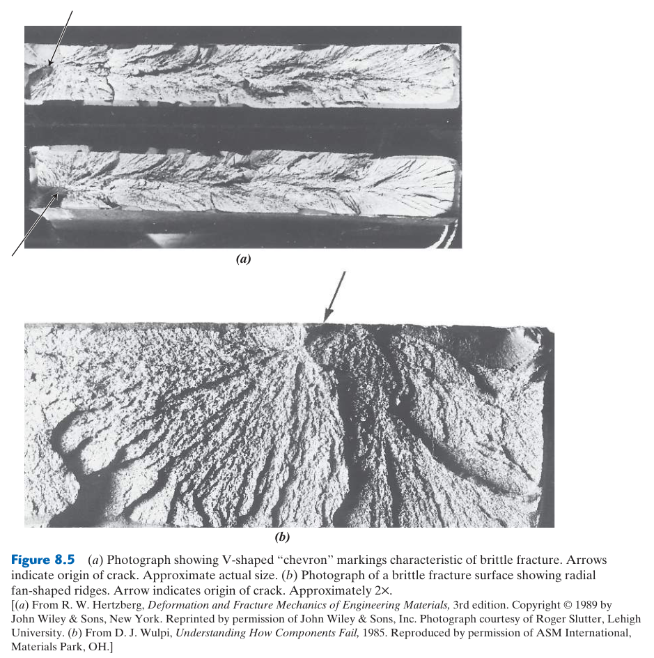
8.5 延脆轉變溫度（DBTT）——歷史的教訓
轉變不是單一絕對溫度：可依吸收能、剪切斷口比例或側向膨脹定義不同 DBTT。BCC 鋼的差排移動在低溫變困難，而解理強度變化較小；細晶、降低 P/S 雜質與控制厚度可使轉變曲線向低溫移動。
BCC 金屬（鋼、鎢、鉻）在低於某溫度時從延性驟變為脆性——DBTT（ductile-to-brittle transition temperature）。根源：BCC 的螺旋差排運動是熱激活的 → 低溫時熱激活不足 → $\tau_{crss}$ 急劇上升 → 在差排能移動之前，裂紋尖端的應力已超過劈裂強度 → 脆性斷裂。FCC 金屬（鋁、銅、沃斯田鐵不銹鋼）有 12 個滑移系統，即使低溫也能塑性變形 → 沒有 DBTT。
二戰期間美國大量建造的 Liberty 船——部分在北大西洋寒冷海水中航行時船體突然斷成兩半（焊接船體的脆性斷裂，水溫低於鋼的 DBTT）。Titanic 的鋼板在冰水中（−2°C）的 Charpy 衝擊值極低——低於 DBTT → 與冰山碰撞後脆性斷裂而非塑性變形。 低溫結構必須使用 FCC 材料（鋁合金、沃斯田鐵不銹鋼）或特殊低溫鋼（含 Ni 降低 DBTT）。
薄試片：裂紋尖端在厚度方向可自由收縮 → 平面應力狀態 → 塑性區大 → 韌性高。厚試片：厚度方向被周圍彈性材料約束 → 平面應變狀態 → 三軸拉伸 → 塑性區被壓縮 → 韌性最低。ASTM E399 要求試片厚度 $B \ge 2.5(K_{Ic}/\sigma_y)^2$ 確保平面應變——因為 $K_{Ic}$ 必須是最保守（最低）的韌性值。
8.6 破裂韌性測試——$K_{Ic}$ 的測定
預裂紋是可信度核心：機加工缺口仍太鈍，需用疲勞預裂紋建立近似真實裂尖。試件厚度、裂紋長度與韌帶必須滿足小尺度降伏判據；若尺寸不足，只能報告條件值 $K_Q$，不能直接稱為 $K_{Ic}$。
$K_{Ic}$（平面應變破裂韌性）是材料的本徵性質——一旦測定，可用於預測含裂紋構件在任何載荷下的斷裂行為。但測定 $K_{Ic}$ 本身需要嚴格的標準化流程（ASTM E399），因為測得的韌性值高度依賴試片幾何和試驗條件。
試片要求：(1) 必須含有疲勞預裂紋（fatigue precrack）——先在循環載荷下在機械加工的缺口根部產生一條尖銳的自然裂紋，模擬真實裂紋的尖端半徑（~原子尺度）。(2) 試片厚度 $B$ 必須滿足：$B \ge 2.5(K_{Ic}/\sigma_y)^2$——確保裂紋尖端處於平面應變（plane strain）狀態，塑性區遠小於厚度。若試片太薄 → 平面應力狀態 → 塑性區大 → 測得的韌性偏高（非真正的 $K_{Ic}$）。(3) 裂紋長度 $a$ 也需滿足 $a \ge 2.5(K_{Ic}/\sigma_y)^2$。
這條厚度準則的實際含義：高韌性材料的 $K_{Ic}$ 測試需要極厚的試片。以 4340 鋼（$\sigma_y \approx 1500$ MPa，$K_{Ic} \approx 50$ MPa√m）為例：$B \ge 2.5(50/1500)^2 = 2.8$ mm——合理的試片尺寸。但對於韌性極高的材料（如某些鋁合金 $K_{Ic} \approx 33$ MPa√m，$\sigma_y \approx 345$ MPa）：$B \ge 2.5(33/345)^2 = 23$ mm——需要厚試片。對於某些極韌的鋼（如 HY-130，$K_{Ic} \approx 150$ MPa√m，$\sigma_y \approx 900$ MPa）：$B \ge 69$ mm——實驗室中難以測量真正的 $K_{Ic}$。
常用試片幾何：(1) 三點彎曲 SENB（single edge notched bend）——矩形棒，含單邊裂紋，三點彎曲加載。簡單、省料。(2) 緊湊拉伸 C(T)（compact tension）——較節省材料（相比 SENB），加載孔位於裂紋線上方，產生模式 I（張開型）裂紋。加載過程中記錄載荷–裂嘴張開位移曲線，根據 ASTM E399 的五種 $P_Q$（暫定 $K_Q$）判定準則確定 $K_Q$，若滿足所有有效性準則 → $K_{Ic}$。
$K_{Ic}$ 基於線彈性破裂力學（LEFM），前提是裂紋尖端的塑性區遠小於裂紋長度和試片尺寸（小規模降伏 small-scale yielding）。若材料韌性極高（塑性區 > 試片尺寸的 1/50），LEFM 失效 → 需使用 J 積分（$J_{Ic}$）或裂紋尖端張開位移 CTOD（$\delta_c$）等 EPFM 參數。壓力容器鋼（如 A533B）在韌脆轉變溫度以上時，LEFM 無效——這是核反應器壓力容器安全評估的核心挑戰。
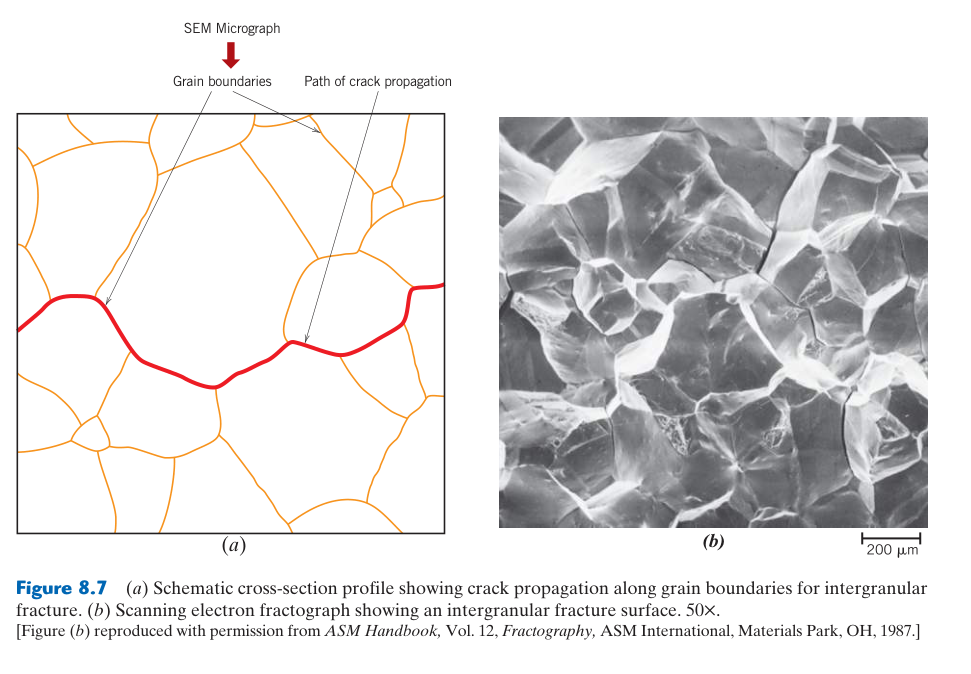
8.7 疲勞——循環載荷下的漸進式破壞
低於降伏仍會失效：名義應力雖在彈性範圍，粗糙、缺口、夾雜或滑移帶處仍會反覆產生局部塑性。疲勞壽命包含裂紋起始與傳播；光滑試件常由起始主導，焊縫或含缺陷結構則常由傳播主導。
疲勞（fatigue）是材料在循環載荷下，經過一定次數的應力循環後發生破壞的現象——即使最大循環應力遠低於材料的降伏強度。疲勞佔所有金屬失效的 ~90%，是工程中最常見也最危險的失效模式之一——因為它可以在無任何外觀預警的情況下突然發生。
疲勞的三階段：(1) 裂紋起始（crack initiation）——在表面滑移帶處形成顯微裂紋（~μm 級）；(2) 裂紋傳播（crack propagation）——裂紋在每個應力循環中向前推進 ~nm 級距離；(3) 最終斷裂（final fracture）——當剩餘截面無法承受峰值載荷時，瞬間快速斷裂。
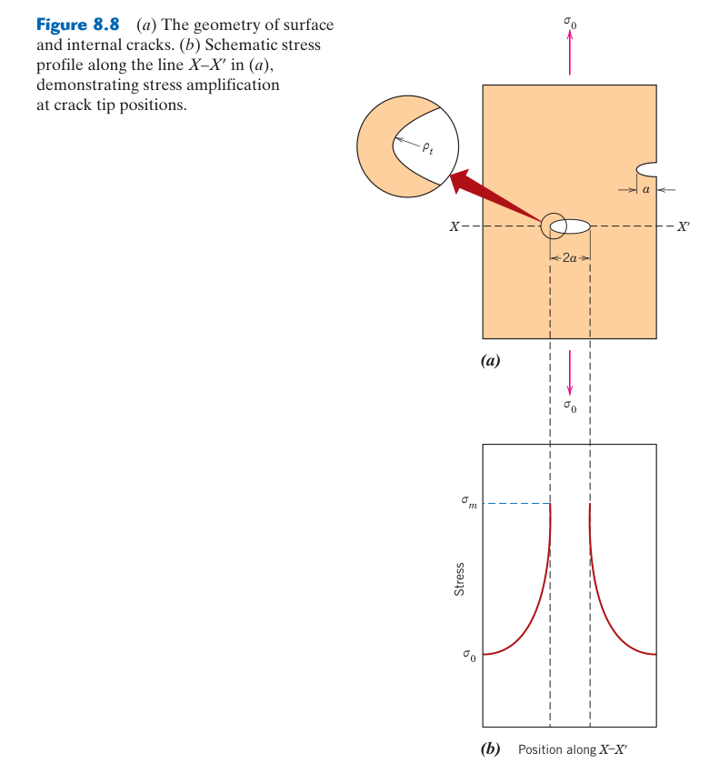
8.8 S–N 曲線——疲勞壽命的預測工具
曲線須連同條件閱讀：平均應力、應力比 $R$、頻率、表面與環境都會移動 S–N 曲線。鋼可能呈疲勞限，鋁合金通常沒有真正水平平台；工程上應指定目標循環數的疲勞強度與存活機率。
S–N 曲線（Wöhler 曲線）是疲勞設計的基礎工具：對一系列相同試片施加不同應力幅值 $S$，記錄破壞所需的循環數 $N$。典型特徵：$S$ 愈低 → $N$ 愈長。兩類材料的關鍵區別：(1) 有疲勞極限（ferrous alloys，鋼和鈦）——存在一個應力值 $S_e$（疲勞極限 endurance limit），低於此應力材料永不疲勞破壞（可承受無限次循環）。$S_e \approx 0.35$–$0.6 TS$（對鋼）。這是鋼結構疲勞設計的基礎——只要工作應力低於 $S_e$，壽命是無限的。(2) 無疲勞極限（鋁、銅、鎂合金）——無論應力多低，疲勞壽命總是有限的（雖然極長）。設計時通常以 $10^7$ 或 $10^8$ 循環的「疲勞強度」作為設計基準。
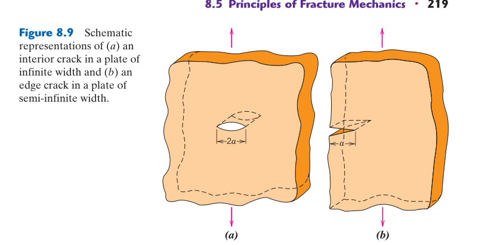
8.9 疲勞裂紋的起始與微觀機制
持續滑移帶造成幾何損傷：循環滑移並非完全可逆，逐漸形成侵入與擠出，使局部應力集中並產生微裂紋。裂紋初期常沿最大剪應力方向，尺寸增加後再轉為近乎垂直最大主拉應力的 Mode I 傳播。
疲勞裂紋總是從表面起始——這是疲勞最大的特徵。循環載荷下，表面晶粒中有利取向的滑移系統反覆滑移 → 形成持續滑移帶（persistent slip bands, PSBs）→ 滑移帶處產生侵入（intrusion，滑移帶陷入表面）和擠出（extrusion，材料擠出表面）→ 應力集中在侵入的根部 → 顯微裂紋在此成核。這是為什麼表面品質是疲勞壽命最關鍵的因素——加工刀痕、刮痕、腐蝕坑全部是潛在的疲勞起始點。拋光試片的疲勞壽命可以比粗糙試片高 10–100 倍。
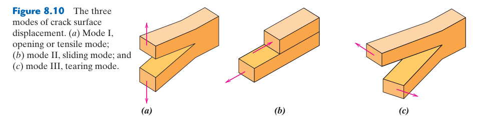
8.10 Paris 定律——疲勞裂紋傳播的定量描述
Paris 式只描述中段：$da/dN=C(\Delta K)^m$ 不適合門檻附近，也不描述接近 $K_{Ic}$ 的快速失穩。平均應力、裂紋閉合、過載、腐蝕與載荷順序都會改變有效驅動力，變幅載荷不可只代入平均振幅。
疲勞裂紋在亞臨界傳播階段的速率由 Paris 定律（1963）描述：$da/dN = C(\Delta K)^m$，其中 $\Delta K = K_{\max} - K_{\min} = Y\Delta\sigma\sqrt{\pi a}$。$C$ 和 $m$ 是材料常數。裂紋傳播在斷口上留下兩種標記：(1) 海灘紋（beach marks / clamshell marks）——肉眼可見的同心弧線，每次標記 = 載荷變化（如設備啟動/停機、載荷增減）而非單個循環；(2) 條紋（striations）——SEM 下才能觀察到的極細平行線條，每條條紋 = 一個應力循環。實驗室中可通過條紋間距反推 $\Delta K$——這是失效分析的關鍵技術。
Paris 定律是損傷容限設計（damage-tolerant design）的基礎：已知初始裂紋尺寸 $a_0$ → 積分 Paris 定律 → 計算達到臨界裂紋尺寸 $a_c$ 所需的循環數 $N_f$ → 設定檢測週期 $N_{inspection} < N_f$（含安全係數）。
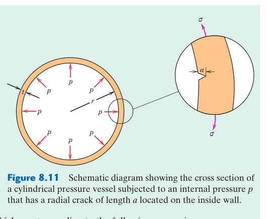
8.11 提高疲勞壽命的工程策略
策略要對準壽命階段：拋光、圓角與去除傷痕可延緩起裂；噴丸、滾壓與表面硬化引入壓縮殘留應力；潔淨化減少夾雜起點。若已有裂紋，則應依損傷容限安排檢測週期與容許裂紋尺寸。
提高疲勞壽命的關鍵策略都圍繞表面：(1) 噴丸（shot peening）——高速鋼珠撞擊表面 → 表面塑性變形 → 次表面彈性回復 → 表面產生壓縮殘留應力層（~0.1–0.5 mm 深）。疲勞裂紋需要拉伸應力才能張開——表面壓縮應力抵消了部分拉伸應力，使有效應力幅值降低。(2) 滲碳/滲氮——表面高碳/高氮硬化層的體積膨脹產生壓縮殘留應力。(3) 設計——避免尖銳轉角（應力集中點），使用圓角（fillet）；減少表面粗糙度。
腐蝕疲勞：腐蝕環境同時作用時，疲勞極限消失——即使應力低於空氣中的疲勞極限，材料也會在有限循環後斷裂。機制：循環應力反覆破壞保護性氧化膜 → 裸露金屬被腐蝕 → 形成蝕坑（pit）→ 應力集中點 → 加速裂紋起始。海洋結構的疲勞設計不能依賴空氣中的疲勞極限數據——必須使用腐蝕疲勞數據。
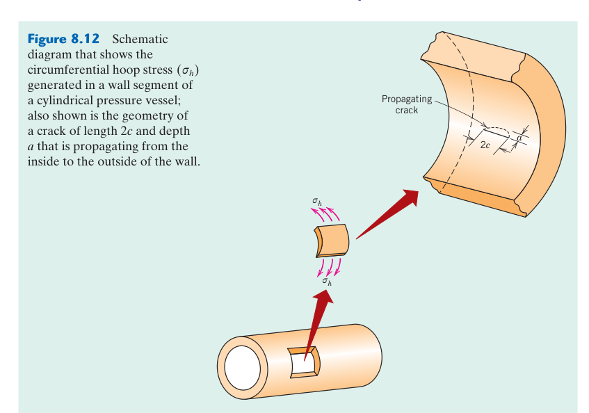
8.12 潛變——高溫下的時間依賴變形
同系溫度更有意義：金屬約在 $T/T_m>0.4$ 時需重視潛變。第一期因加工硬化而減速，第二期由硬化與回復平衡而近穩態，第三期因頸縮、孔洞與晶界損傷而加速至破裂。
潛變（creep）是材料在高溫恆定負載下，隨時間持續進行塑性變形的現象——即使應力遠低於該溫度下的降伏強度。關鍵條件是同系溫度 $T/T_m$（絕對溫度/熔點）：$T/T_m > 0.4$ 時潛變顯著。室溫對鉛（$T_m = 327$°C → $T/T_m \approx 0.5$）來說是「高溫」——鉛管和錫焊點在室溫就會潛變！判斷標準是 $T/T_m$，不是絕對攝氏度。
潛變三階段：(1) 初級（primary / transient）——潛變速率隨時間遞減（加工硬化效應 > 恢復效應）；(2) 次級（secondary / steady-state）——潛變速率恆定（加工硬化與恢復達成動態平衡），這是工程設計的關鍵參數 $\dot{\epsilon}_s$；(3) 三級（tertiary）——潛變速率加速（頸縮、內部空洞形成、或微觀結構劣化）直到斷裂。
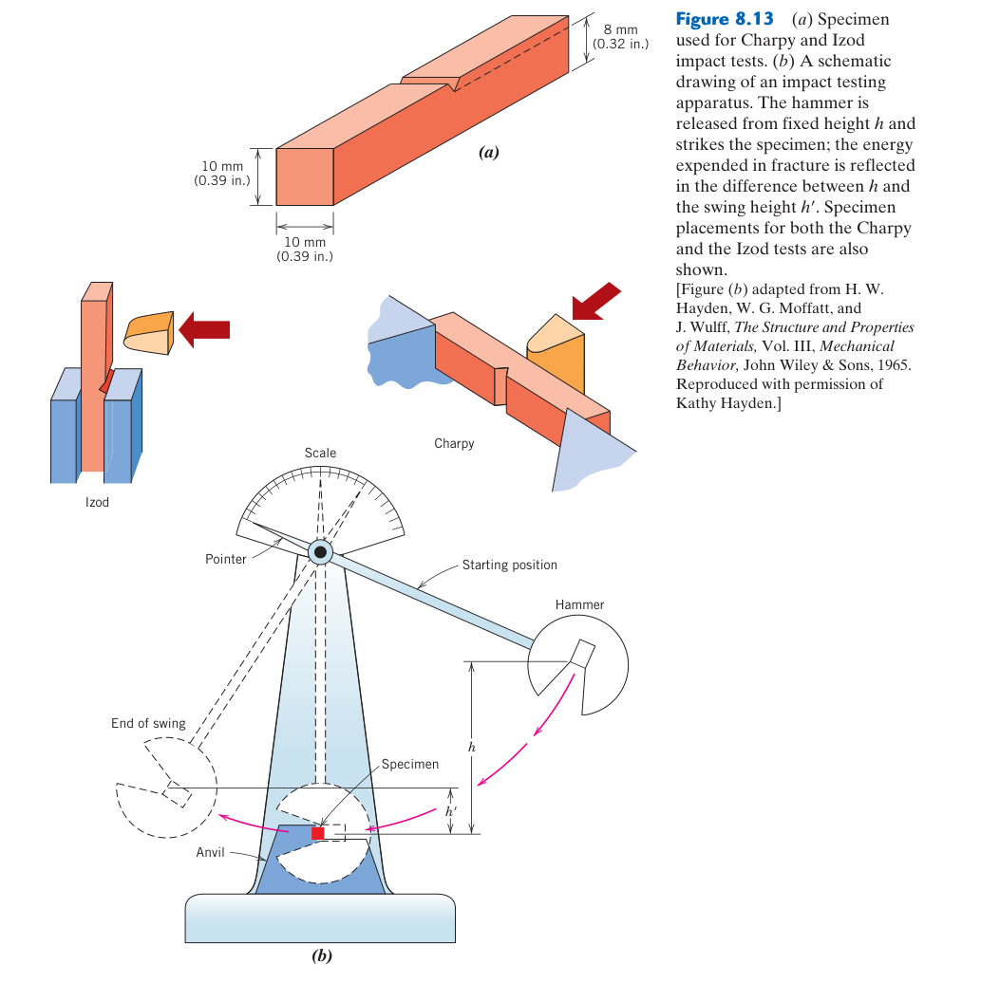
8.13 潛變的微觀機制——差排攀移與擴散潛變
機制圖思維：高應力常由差排滑移與攀移控制；低應力高溫可轉為 Nabarro–Herring 晶格擴散或 Coble 晶界擴散。擴散潛變對細晶敏感，因此室溫有利的細晶強化，在高溫長期服役未必有利。
潛變的核心是熱激活使差排能夠攀移（climb）——離開原滑移面，繞過障礙物。低溫時差排只能滑移（glide），被障礙物阻擋後無法繼續。高溫時空位擴散到差排核心 → 差排攀移到相鄰滑移面 → 繞過障礙物 → 繼續滑移。攀移+滑移的交替使變形可無限期在低於 $\sigma_y$ 的應力下持續。
擴散潛變（極低應力、$T > 0.8T_m$）：差排活動極少，變形由原子擴散流主導。Nabarro-Herring 潛變：原子透過晶格擴散 → $\dot{\epsilon} \propto \sigma d^{-2}$。Coble 潛變：原子透過晶界擴散 → $\dot{\epsilon} \propto \sigma d^{-3}$。Coble 對晶粒尺寸更敏感（$d^{-3}$）→ 細晶粒在低應力下 Coble 潛變更顯著。但在高應力差排潛變（冪律）中，細晶粒反而是不利的（晶界滑動增加）。這就是為什麼抗潛變合金需要粗晶粒或單晶——與 Hall-Petch 完全相反。
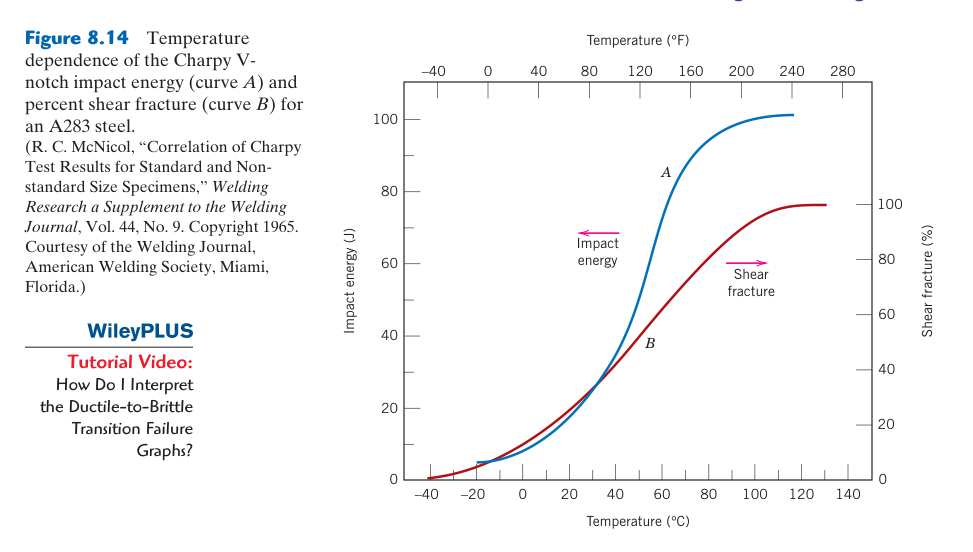
8.14 Larson-Miller 參數——潛變壽命的加速測試與外推
外推前提：$P=T(C+\log t_r)$ 假設加速測試與服役具有相同主導機制，常數 $C$ 也需由材料資料校正。若高溫試驗引起相溶解、氧化或晶粒成長，長時間外推便可能嚴重失真。
實際工程零件的潛變壽命可能是數十年——不可能進行等長的實驗測試。Larson-Miller 參數解決了這個問題：$P = T(C + \log t_r)$（$T$ 為 K，$t_r$ 為小時，$C \approx 20$）。給定應力下，$P$ 為常數 → 可從高溫短時測試外推低溫長時服役壽命。例如：1000°C（1273 K）下 100 小時斷裂 → $P = 1273(20 + \log 100) = 28006$。同材料在 800°C（1073 K）、同應力下的斷裂時間：$\log t_r = P/1073 - 20 = 6.1$ → $t_r = 1.26 \times 10^6$ 小時 ≈ 144 年！溫度僅降 200°C，壽命從 100 小時增至 >100 年。
📝 自編概念例：Larson-Miller 的工程應用
問題：渦輪葉片在 950°C、150 MPa 下的設計壽命要求為 10,000 小時。實驗室可在 1050°C 進行加速測試。需在 1050°C 測試多長時間來等效驗證 950°C/10,000 小時的壽命？
解：$T_1 = 950+273=1223$ K，$t_1=10000$ hr。$P=1223(20+\log 10000)=1223\times24=29352$。$T_2=1050+273=1323$ K。$\log t_2 = P/T_2-20 = 29352/1323-20=2.18$。$t_2=151$ 小時。在 1050°C 測試 151 小時等效於 950°C 測試 10,000 小時。
8.15 抗潛變合金設計——鎳超合金與單晶葉片
系統設計：鎳基超合金用有序共格 $\gamma'$ 阻擋差排，難熔元素降低擴散，單晶消除危險橫向晶界。實際葉片還依賴內部冷卻與隔熱塗層；若追求強度卻促成脆性相析出，長期壽命反而下降。
抗潛變合金設計的核心策略：(1) $\gamma'$（Ni₃Al）析出物——體積分率 50–70%，與 FCC 基材完全共格（晶格失配 <0.5%），高溫下極穩定。差排必須成對切穿 $\gamma'$（超晶格部分差排對）——需要極高應力。(2) 固溶強化——W, Mo, Re（錸）溶入基材，原子半徑大 → 晶格膨脹 → 阻礙差排攀移。單晶葉片含 ~6% Re——年產量僅 ~50 噸，比黃金稀有 50 倍。(3) 單晶鑄造——定向凝固製程：底部水冷+線圈加熱 → 晶體沿 [001] 方向垂直生長 → 完全消除晶界。在高溫下，晶界是弱點——晶界滑動和空洞成核的優先位置。一個渦輪葉片 = 一個晶體。
渦輪葉片的服役溫度（~1000–1100°C）高於鎳超合金的熔點（~1300°C）的 80%——如果沒有冷卻，葉片會在數小時內潛變失效。現代葉片使用內部空氣冷卻通道（從壓縮機引氣通過葉片內部）和熱障塗層（TBC，~0.2–0.5 mm 厚的 YSZ 陶瓷層）降低金屬溫度 ~100–200°C。從 Larson-Miller 可知，降低 100°C 可將潛變壽命延長 10–100 倍——這就是為什麼冷卻技術的投資回報遠高於開發更耐熱的合金。
失效分析案例研究——從斷口讀出失效故事
案例 1：旋轉軸的疲勞斷裂
一支鋼製傳動軸在使用數年後突然斷裂。斷口檢查發現：光滑區域佔斷面的 ~70%，有明顯的同心圓弧線（海灘紋）；粗糙區域佔 ~30%，呈纖維狀。結論：疲勞斷裂——裂紋從表面加工刀痕處起始，經數百萬次旋轉循環逐漸傳播（光滑區），當剩餘截面無法承受峰值扭矩時瞬間過載斷裂（粗糙區）。海灘紋的間距從內到外逐漸增大——表明裂紋加速傳播（$a$ 增大 → $\Delta K$ 增大 → $da/dN$ 增大）。改善措施：圓角取代尖角 + 表面噴丸引入壓縮殘留應力。
案例 2：壓力容器的脆性斷裂——挑戰者號的教訓
一個鋼製壓力容器在水壓試驗中突然粉碎性爆裂，碎片飛散數十米。斷口：完全劈裂（無塑性變形），裂紋起源處有焊接缺陷（~3 mm 深的未熔合）。分析：試驗在冬季進行（水溫 ~5°C），鋼材的 DBTT 約為 10°C → 5°C < DBTT → 裂紋尖端無法塑性鈍化 → 脆性斷裂。裂紋以接近材料音速（~5000 m/s）傳播，容器在數毫秒內完全粉碎。教訓：(1) 必須確認材料 DBTT 低於最低服役溫度；(2) 焊接缺陷必須透過 NDT 檢測；(3) 水壓試驗時應加熱水溫至 DBTT 以上。
案例 3：鍋爐管的潛變失效
一根鍋爐過熱器管（800°C 服役 8 年）發生縱向裂紋洩漏。金相檢查：(1) 晶界處有大量空洞（creep cavities）——晶界滑動形成的顯微孔洞；(2) 空洞優先出現在垂直於主拉伸應力（周向應力）的晶界上；(3) 空洞沿晶界連結形成顯微裂紋 → 最終穿透壁厚。此外，管壁明顯變薄（從原始 6 mm 減至 ~3 mm）——證實了長期潛變的累積應變（有時稱為「蠕脹」或 bulging）。改善措施：使用更高 Cr 含量的耐熱鋼（9Cr-1Mo 取代 2.25Cr-1Mo），提高抗潛變強度。
任何失效分析都應回答五個問題：(1) 什麼斷了？（斷口形貌——延性？脆性？疲勞？潛變？）；(2) 從哪裡開始？（裂紋起源點——表面？內部缺陷？應力集中處？）；(3) 為什麼開始？（起始原因——加工缺陷？腐蝕？過載？）；(4) 如何傳播？（傳播模式——快速斷裂？疲勞？潛變？）；(5) 如何防止？（改進措施——改變材料？修改設計？改善製程？）。這五個問題的回答構成了完整的失效分析報告。
補強專題：破裂韌性試驗與 $K_{Ic}$ 有效性
試驗機算出的數值先稱為條件破裂韌性 $K_Q$；只有試片尺寸足以形成裂紋尖端的平面應變狀態，且載荷紀錄符合標準要求時，才能報告為材料性質 $K_{Ic}$。常用試片包括緊湊拉伸試片（CT）與單邊缺口彎曲試片（SENB），都必須先加工缺口，再以疲勞預裂形成足夠尖銳的真實裂紋。
若試片太薄，裂紋尖端較接近平面應力，塑性區較大，量得的韌性通常偏高且依賴厚度。此時應報告 $K_Q$ 或其他適當的彈塑性破裂參數，不可直接標成 $K_{Ic}$。
📝 完整例題：容許裂紋尺寸
一寬板承受 $\sigma=200$ MPa，材料 $K_{Ic}=50$ MPa·m$^{1/2}$，幾何因子 $Y=1.12$。由 $K_I=Y\sigma\sqrt{\pi a}$：
$$a_c=\frac{1}{\pi}\left(\frac{K_{Ic}}{Y\sigma}\right)^2 =\frac{1}{\pi}\left(\frac{50}{1.12\times200}\right)^2 \approx0.0159\ \text{m}=15.9\ \text{mm}$$
這是理想化的失穩臨界值，不是允許使用值。實際設計必須加入安全係數、載荷變動、裂紋量測誤差、殘留應力與環境效應，並把允許裂紋設得更小。
補強專題：環境如何縮短疲勞壽命
| 效應 | 機制 | 設計上的後果 |
|---|---|---|
| 腐蝕疲勞 | 循環滑移破壞保護膜，裂紋尖端持續溶解 | S–N 曲線可能不再呈現明確疲勞限 |
| 氫輔助開裂 | 氫在高三軸應力區聚集，降低局部延性或凝聚力 | 高強度鋼即使名義應力不高仍可能延遲破裂 |
| 高溫／熱疲勞 | 溫度循環造成熱應變，並與氧化、潛變交互作用 | 不能只使用室溫機械疲勞資料 |
腐蝕反應需要時間，因此頻率降低時，每一循環留給環境作用的時間變長，裂紋成長可能更快。測試資料必須匹配實際介質、溫度、頻率與應力比 $R$。
本章摘要
三種失效模式對照表
| 模式 | 條件 | 機制 | 關鍵公式 | 設計對策 |
|---|---|---|---|---|
| 脆性斷裂 | $K_I \\ge K_{Ic}$；低溫或高應變速率 | 裂紋尖端應力超過原子鍵結強度→劈裂 | $\\sigma_c = K_{Ic}/(Y\\sqrt{\\pi a})$ | 選高 $K_{Ic}$ 材料；避免 BCC 低於 DBTT；NDT 檢測裂紋 |
| 疲勞 | 循環應力，即使 $\\sigma < \\sigma_y$ | 表面滑移帶→裂紋起始→週期性傳播→最終斷裂 | S–N 曲線；$\\sigma_a = \\sigma_f'(2N_f)^b$ | 表面壓縮殘留應力（噴丸）；避免尖銳缺口 |
| 潛變 | $T > 0.4T_m$ + 恆定負載 | 差排攀移+晶界滑動+擴散→時間依賴變形 | $\\dot{\\epsilon}_s = K_1\\sigma^n\\exp(-Q_c/RT)$ | 單晶（消除晶界）；$\\gamma'$ 析出；高 $T_m$ 材料 |
- 破裂力學是設計的底線：$K_I \\ge K_{Ic}$ 時瞬間斷裂——已知裂紋尺寸和 $K_{Ic}$ 可計算安全應力。
- 疲勞是金屬失效的頭號殺手（~90%）：表面品質決定疲勞壽命。噴丸引入壓縮應力可延壽數十倍。
- 潛變不是「高溫專利」：同系溫度 $T/T_m > 0.4$ 才是標準。鉛和焊點在室溫就潛變。
- 材料選擇 = 強度–韌性的權衡：高強度→低 $K_{Ic}$。航空材料必須同時滿足強度和損傷容限。
📝 概念診斷題
- 一個壓力容器使用鋼板（$K_{Ic}=50$ MPa·√m, $\\sigma_y=1200$ MPa），檢測發現最深裂紋 $a=2$ mm（$Y=1.1$）。計算臨界斷裂應力 $\\sigma_c$。如果設計應力為 800 MPa，這個裂紋安全嗎？
- 為什麼 FCC 金屬（鋁、銅、沃斯田鐵不銹鋼）在極低溫下仍保持延性，而 BCC 金屬（普通碳鋼）在 0°C 就可能脆斷？提示：滑移系統數量與熱激活的關係。
- 一個鋼製曲軸（疲勞極限 ~300 MPa）在設計上安全，但實際使用中在 150 MPa 循環應力下就斷裂了。斷口檢查發現表面有腐蝕坑。腐蝕如何降低疲勞極限？
- 兩個渦輪葉片：A 是傳統多晶鎳超合金，B 是同成分的單晶。B 的潛變壽命比 A 長 3–5 倍。為什麼？提示：潛變中晶界滑動的角色。
- 鉛管（$T_m=327°C$）在室溫（25°C）使用是否會有潛變問題？計算同系溫度並判斷。
⚠️ 初學者常見錯誤
錯。強度和韌性通常反向——高強度材料（工具鋼、高強度鋁）的 $K_{Ic}$ 較低。設計中必須權衡。
錯。室溫對鉛已是 $T/T_m \approx 0.5$。判斷標準是同系溫度。
僅在無腐蝕、無應力集中的理想條件下成立。實際零件有缺口和腐蝕——需額外安全係數。
錯。破裂力學的 $da/dN = C(\Delta K)^m$（Paris 定律）是疲勞壽命預測的核心工具——已知初始裂紋尺寸，積分 Paris 定律可計算達到臨界尺寸的循環數。破裂力學不僅解釋「為什麼斷」，還預測「多久會斷」。
📚 延伸資源
- Anderson, T.L., Fracture Mechanics: Fundamentals and Applications — 破裂力學的標準教科書
- Suresh, S., Fatigue of Materials — 疲勞的完整處理，從微觀機制到工程設計
- Kassner, M.E., Fundamentals of Creep in Metals and Alloys — 潛變機制與抗潛變合金設計
- 下一章：第 9 章：相圖——Gibbs 相律、槓桿定律、Fe–C 相圖
🧪 推導與診斷
診斷
為什麼 FCC 金屬沒有 DBTT？
FCC 有 12 個滑移系統，即使在低溫下也有足夠的滑移系統滿足 von Mises 準則→塑性變形可持續到極低溫。BCC 的滑移主要依賴熱激活的螺旋差排運動（Peierls 應力高），低溫下熱激活不足→差排無法移動→脆性斷裂。